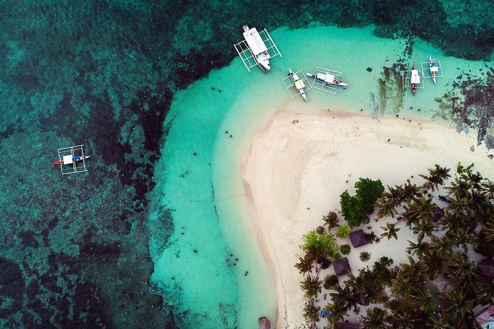
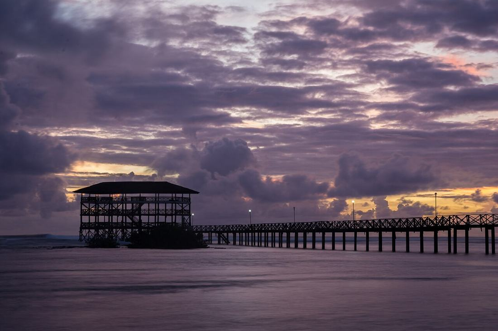
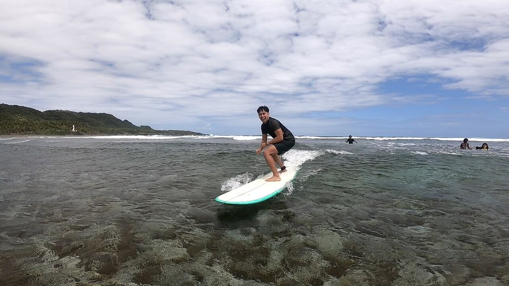

🏄 Surf & social
Siargao General Luna
The most social island in the country, with great surf culture and coworking. But January is its rainy month.
👥5Social
✨5Experiences
💻5Work
☀️1Jan weather
🚐4Ease
- 🏝️Tri-island boat day: Naked, Daku & GuyamNaked Island: G 4.5★ (713)
- 🛶Sugba Lagoon day tripG 4.5★ (962)
- 🌊Magpupungko rock pools at low tideG 4.5★ (1,489)
🙋 Meet people, never forced
- Mad Monkey Siargao Free-flow “Meet Up” at 7pm every night, plus quiz and challenge nights. Hostelworld lists 38 events. Dorms only, so do 2 nights here for the buzz, then move.
- Surf camps Kermit Surf Resort runs surf-camp packages. Surf & Yoga Siargao is an all-inclusive camp (G 4.8★, 73).
- Coworking crowd Coco Space and Lungga are coworking and community spaces. You meet people just by working there.
- Easy exit Stay somewhere calmer (Bajala or Kermit) and dip into the social stuff only when you feel like it.
🛌 Stay mix
🛏️ Social hostel
HW 9.6 (159) · G 4.7★ (88)
Private room from ~A$30
Calmer. 7 of its last 10 Hostelworld reviewers were aged 25–40.
🏡 Mid-range
G 4.5★ (1,925)
Price not shown on Google today
Surf lessons, surf-camp packages, famous Italian restaurant
Prices: lowest rate shown on Google Maps or Hostelworld on 28 Sep 2026 (for an Oct–Dec date), converted from USD. January is high season, so expect more.
💻 Work
- Lungga Coworking G 4.9★ (72) · Solar power, Starlink, backup power, call booths, open 24/7
- Coco Space G 4.9★ (273) · Solar-powered, call booths, community events
- Alter Space G 4.7★ (131) · Fibre plus Starlink, open 24/7
The best remote-work setup on this list. Speeds aren’t published, so test the wifi on day 1.
🌦️ January weather
18days with 5mm+ rain
435mm rain
25–28°night–day
Wettest place on the list. Mad Monkey itself calls Nov–Apr “rainy season”, and the surf season is May–Nov. Expect several rainy days a week and messy surf.
🚐 Getting there
From Manila or Cebu: direct flight to Siargao (IAO), about 1h40 from Manila or 1h from Cebu, then a 45-min van to General Luna. Flight prices vary by date (not checked).
⏳ How long
7–10 days, or longer as a work base
🔗 Links
🧮 Why these scores
- 👥 5 Mad Monkey: HW Atmosphere 9.8, 1,507 reviews, 38 events → base 4. Bonus +1: surf camps (Luna Surf School G 4.9★, 73) and community coworking (Coco Space G 4.9★, 273).
- ✨ 5 All 3 top experiences are ≥4.5★ with ≥150 reviews (713, 962, 1,489) → 2+3 = 5.
- 💻 5 3 coworkings ≥4.5★ (4.9, 4.9, 4.7) with backup or solar power → 5.
- ☀️ 1 About 18 days with 5mm+ rain in an average January (435mm) → 1.
- 🚐 4 Direct flight plus a 45-min van, about 2.5–3.5h on the move → 4.